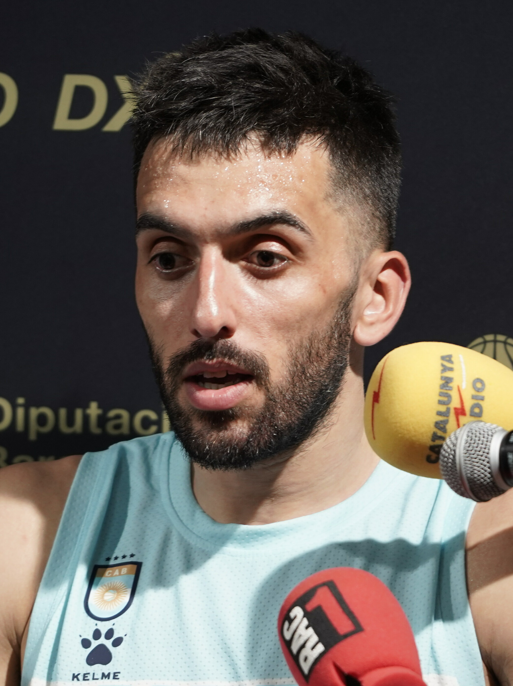

Así va la temporada del Real Madrid de basket en Euroliga y qué se puede esperar 🍿
El Madrid llega al tramo decisivo entre los mejores, pero con margen mínimo de error en una Euroliga durísima
El Real Madrid afronta el cierre de la fase regular de la Euroliga 2025-26 en plena pelea por el top 4. Analizamos su momento competitivo, las claves del equipo de Sergio Scariolo y qué puede esperarse en el tramo final de la temporada.